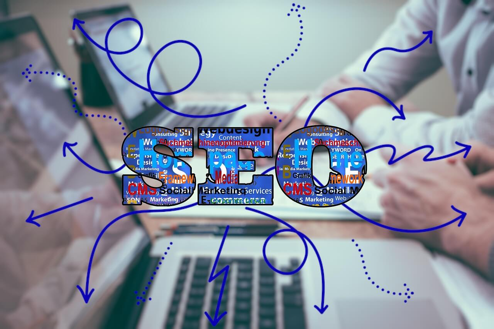

Como Aumentar Vendas com Marketing Digital: 5 Estratégias Comprovadas
Transforme visitantes em clientes fiéis com técnicas testadas e aprovadas

Você investe em marketing digital mas não vê os resultados esperados nas vendas? Não está sozinho. Muitos empresários enfrentam o mesmo desafio: gerar tráfego é uma coisa, converter esse tráfego em vendas é outra completamente diferente.
A boa notícia é que existem estratégias comprovadas que podem aumentar suas vendas online em até 300% quando aplicadas corretamente. Neste artigo, vou compartilhar 5 técnicas que utilizamos na Olliver Digital para transformar visitantes em clientes pagantes.
1. Otimize Seu Funil de Vendas para Máxima Conversão
O funil de vendas é a jornada que seu cliente percorre desde o primeiro contato com sua marca até a compra final. Um funil mal otimizado pode estar desperdiçando até 70% dos seus leads qualificados.
Como Implementar:
- Mapeie cada etapa: Identifique onde seus leads estão abandonando o processo
- Crie conteúdo específico: Para cada estágio do funil (topo, meio e fundo)
- Use automação: E-mails automáticos que nutrem leads no momento certo
- Teste constantemente: A/B testing em landing pages, CTAs e formulários
"Após otimizar nosso funil de vendas com a Olliver Digital, aumentamos nossa taxa de conversão de 2% para 8% em apenas 3 meses." - Cliente do setor de e-commerce
2. Invista em Tráfego Pago Qualificado (Não Apenas Tráfego)
Muitas empresas cometem o erro de focar apenas em volume de tráfego, quando deveriam focar em qualidade do tráfego. Mil visitantes desinteressados valem menos que 100 visitantes prontos para comprar.
Estratégias de Tráfego Qualificado:
- Segmentação avançada: Use dados demográficos, interesses e comportamentos
- Remarketing inteligente: Impacte quem já demonstrou interesse
- Lookalike Audiences: Encontre pessoas similares aos seus melhores clientes
- Palavras-chave de intenção de compra: Foque em termos como "comprar", "preço", "melhor"
Dica de ouro: No Google Ads, palavras-chave de cauda longa (long-tail) costumam ter menor custo por clique e maior taxa de conversão. Por exemplo, ao invés de "tênis", use "tênis de corrida masculino tamanho 42 promoção".
3. Crie Landing Pages que Convertem
Uma landing page bem construída pode ter taxa de conversão de 20% a 40%, enquanto uma página genérica raramente passa de 2%. A diferença está nos detalhes.
Elementos Essenciais de uma Landing Page de Alta Conversão:
- Headline irresistível: Promessa clara de valor nos primeiros 3 segundos
- Prova social: Depoimentos, números de clientes, cases de sucesso
- CTA (Call-to-Action) destacado: Botão visível, cor contrastante, texto persuasivo
- Senso de urgência: Ofertas limitadas, contadores regressivos
- Formulário otimizado: Peça apenas informações essenciais
- Design responsivo: Mais de 60% das conversões vêm do mobile

4. Implemente E-mail Marketing Estratégico
O e-mail marketing tem um ROI médio de 4200% (R$42 para cada R$1 investido), segundo a DMA. Mas apenas se feito corretamente.
Sequências de E-mail que Vendem:
- Boas-vindas: Primeira impressão conta! Apresente sua marca e ofereça valor imediato
- Nutrição de leads: Eduque sobre seu produto/serviço ao longo de 7-14 dias
- Carrinho abandonado: Recupere até 30% das vendas perdidas
- Pós-venda: Transforme clientes em promotores da marca
- Reativação: Traga de volta clientes inativos com ofertas especiais
Segredo profissional: Personalize! E-mails com o nome do destinatário no assunto têm 26% mais chances de serem abertos. Use dados comportamentais para enviar ofertas relevantes no momento certo.
5. Use Prova Social e Gatilhos Mentais
93% dos consumidores leem avaliações online antes de comprar. A prova social é um dos gatilhos mentais mais poderosos para aumentar vendas.
Tipos de Prova Social que Funcionam:
- Depoimentos em vídeo: Autenticidade que gera confiança
- Avaliações com estrelas: Visíveis em todas as páginas de produto
- Números impressionantes: "Mais de 10.000 clientes satisfeitos"
- Cases de sucesso: Resultados reais de clientes reais
- Selos de confiança: Certificações, prêmios, garantias
- Urgência e escassez: "Últimas 3 unidades" ou "Oferta válida até amanhã"
Bônus: Métricas que Você Deve Acompanhar
Não dá para melhorar o que você não mede. Acompanhe estas métricas semanalmente:
- Taxa de conversão: Percentual de visitantes que compram
- Custo por aquisição (CPA): Quanto você gasta para conquistar um cliente
- Lifetime Value (LTV): Valor total que um cliente gera ao longo do tempo
- ROI de campanhas: Retorno sobre investimento em cada canal
- Taxa de abandono de carrinho: Oportunidades perdidas
Conclusão: Hora de Colocar em Prática
Aumentar vendas com marketing digital não é mágica – é estratégia, testes e otimização constante. As 5 estratégias que compartilhei aqui são usadas por empresas que faturam milhões online:
- ✅ Otimize seu funil de vendas
- ✅ Invista em tráfego qualificado
- ✅ Crie landing pages que convertem
- ✅ Implemente e-mail marketing estratégico
- ✅ Use prova social e gatilhos mentais
A pergunta é: você vai continuar desperdiçando oportunidades ou vai implementar essas estratégias hoje mesmo?
🚀 Precisa de Ajuda para Implementar?
Na Olliver Digital, somos especialistas em transformar estratégias em resultados reais. Já ajudamos dezenas de empresas no Ceará e em todo o Brasil a aumentarem suas vendas online em até 300%.
Agende uma consultoria gratuita e descubra como podemos criar uma estratégia personalizada para o seu negócio.
Solicitar Consultoria Gratuita